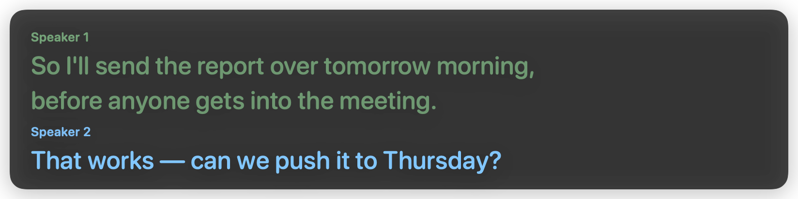
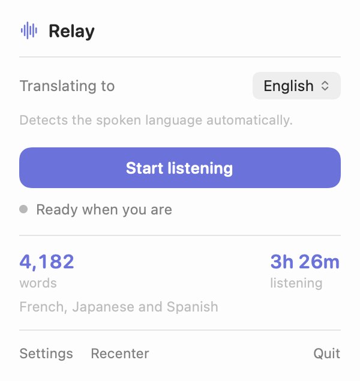

Live translation for calls on Mac
Relay puts live translated subtitles on your screen while people speak. It works with Zoom, Google Meet, Teams, browser video and anything else playing on your Mac, without adding a bot to the call.
What was said, and what you read. Nobody else on the call sees anything.
Relay listens to the audio already playing on your Mac. There is no calendar connection, no bot participant, and nobody else has to install anything. Start it when you need it and stop it when you are done.
Relay detects the language as people speak, even when a call switches between languages.
Optional speaker labels colour each line by voice, so the conversation stays easy to follow.
Listen to all Mac audio, the apps you choose, or a nearby conversation through your microphone.

Audio is never saved to disk. In Local mode, speech is recognised on your Mac and only the recognised text goes to the translation provider you chose. Relay keeps no transcript unless you turn one on, and that one stays in memory until you save it.
| Mode | Audio | Best for |
|---|---|---|
| Local | Stays on your Mac | Private, affordable subtitles |
| Instant | Streams to OpenAI | The lowest latency |
No analytics, no account, no telemetry. Your API keys live in the macOS Keychain.
Relay is signed and notarized, and installs like any Mac app. It lives in the menu bar.

Relay is free. Use your own Anthropic or OpenAI key and pay only your provider's usage, which Local mode is designed to keep small: well under a dollar for an hour of talking. See what an hour costs.
Prefer not to manage a key? Relay Hosted is coming.